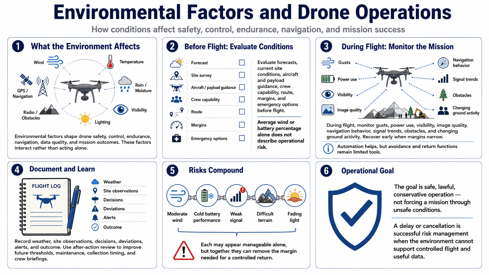

Course Summary and Key Takeaways
Connecting to LMS... Progress: in progress

Narration
Environmental factors shape drone safety, control, endurance, navigation, data quality, and mission outcomes. Wind, temperature, moisture, visibility, lighting, terrain, obstacles, radio conditions, and navigation signals interact rather than acting alone.
Evaluate forecasts, current site conditions, aircraft and payload guidance, crew capability, route, margins, and emergency options before flight. Average wind or a battery percentage by itself does not describe operational risk.
During flight, monitor gusts, power use, visibility, image quality, navigation behavior, signal trends, obstacles, and changing ground activity. Recover early when margins narrow. Automated avoidance and return functions remain limited tools.
Record weather, site observations, decisions, deviations, alerts, and outcome. Use after-action review to improve future thresholds, maintenance, collection timing, and crew briefings.
Remember that risks compound. Moderate wind, cold battery performance, weak signal, difficult terrain, and fading light may each appear manageable alone while their combined effect removes the margin needed for a controlled return.
The goal is safe, lawful, conservative operation, not forcing a mission through unsafe conditions. A delay or cancellation is successful risk management when the environment cannot support controlled flight and useful data.